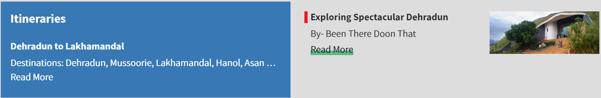
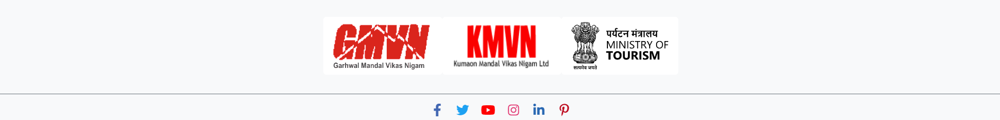

WHAT TO KNOW:
Fascinating history and intriguing mythology meet at the crossroads of this beautiful hill-station, one of the most popular in the country. Just 240 km from Delhi,
nestled in the rolling Doon Valley and at the foothills of the Himalayas, Dehradun is surrounded by high mountains and lush Sal forests. Known for its pleasant
year-round weather and scenic surroundings, the city is a gateway to several popular hill-stations like Mussoorie and pilgrimage sites like Haridwar and Rishikesh.
Offering a blend of unparalleled landscape and modern amenities, bustling Dehradun is a city for both business and leisure. Once a retirement haven, today it buzzes
with excitement, yet has managed to retain its laid-back vibe. Quaint cafés and lounges rub shoulders with heritage monuments and bazaars.
WHEN TO VISIT:
Dehradun is pleasant throughout the year but is ideal from March to June and October to December. Summer temperature peaks at 36°C and the mercury dips to 5°C in winters.

ATTRACTIONS


Dehradun serves as the base camp for several treks, including to Kempty Falls and Nag Tibba in Mussoorie. There are several
high altitude treks that start from here as well.
Enthusiasts pedal away in and around Dehradun's gentle slopes and valley, with trails leading to Mussoorie and Maldevta
(around 40 km). The city has good cycling tracks along the old Mussoorie highway.
For more tourist locations >>
Click Here
HOW TO REACH
